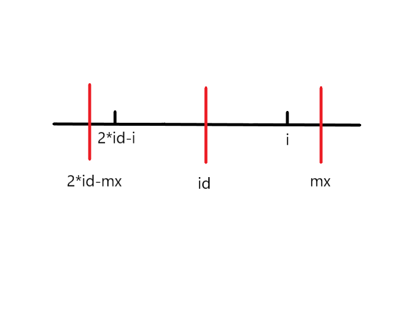
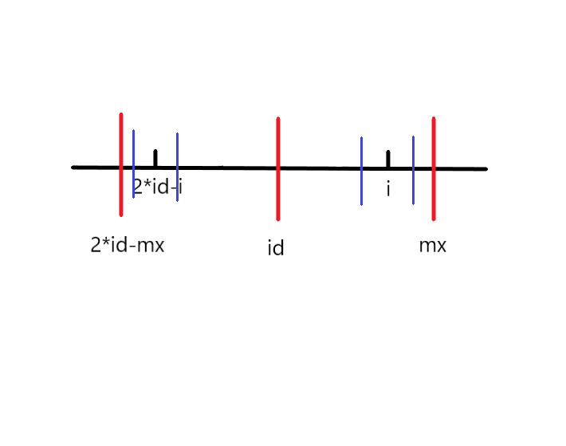
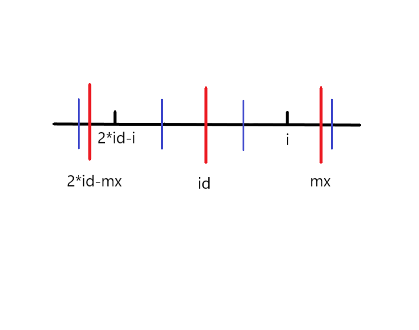
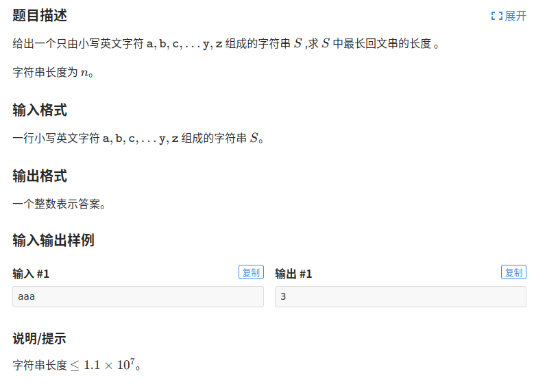

Manacher
在处理字符串问题时，常常会遇到回文串。回文串是正着和反着都一样的字符串，比如"aba", “baab"等。
朴素做法
我们要如何找出最长的回文子串呢？
我们找回文串的时候，一般先确定回文串的中心，然后往两边尽可能的延伸。
回文串根据长度可以分为奇回文和偶回文，所以我们定义两个数组d1和d2，它们分别表示以i为中心，最长的奇回文和偶回文的半径。
string s;
int n = s.length();
int d1[maxn], d2[maxn];
for(int i=0; i<n; i++)
{
d1[i] = 1;
while(0<=i-d1[i] && i+d1[i]<n && s[i-d1[i]]==s[i+d1[i]])
d1[i]++;
d2[i] = 0;
while(0<=i-d2[i]-1 && i+d2[i]<n && s[i-d2[i]-1]==s[i+d2[i]])
d2[i]++;
}
朴素算法的时间复杂度很显然是O(n^2)的，这个算法效率太慢了，且还分为奇回文偶回文来计算，太麻烦了。
预处理字符串
我们可不可以将奇回文和偶回文一起处理，不分两个数组？
我们将原始的字符串进行一些处理，得到一个新的字符串，就可以很方便的计算了。
我们在每一个字符间，包括头和尾，都插入一个特殊的字符，比如#，当然这个字符得是原字符串一定不出现的字符才行。
原字符串: abba
预处理后: #a#b#b#a#
原字符串: aba
预处理后: #a#b#a#
经过这样的预处理后，我们得到的字符串长度为奇数，并且可以将d1和d2合并成一个数组。
计算最长回文子串
我们用p数组来记录以i为中心的最长回文串的半径。
i 0 1 2 3 4 5 6 7 8 9 10 11 12
s[i] # c # a # b # b # a # f #
p[i] 1 2 1 2 1 2 5 2 1 2 1 2 1
观察到以i为中心的最长回文串的长度为p[i]-1
所以最长的回文子串的长度为max(p[i]-1)
计算最长回文子串的开始索引
知道了最长回文串的开始索引，我们就能找出最长的回文串是哪一个了。
还是以"cabbaf"为例
i 0 1 2 3 4 5 6 7 8 9 10 11 12
s[i] # c # a # b # b # a # f #
p[i] 1 2 1 2 1 2 5 2 1 2 1 2 1
观察到p[6]=5是最长的半径，用6(i)-5(p[i])得到1，发现1正好是原始字符串"cabbaf"中a的索引号
再看一个奇回文的例子，p[1]=2，计算以c为中心的最长回文子串的开始索引，用1(i)-2(p[i])=-1，出现了负数，这可不行。
我们再在字符串前面加一个特殊符号’$’，在末尾加’@’，这两个字符也要保证原始字符串中绝对不出现。
i 0 1 2 3 4 5 6 7 8 9 10 11 12 13 14
arr[i] $ # c # a # b # b # a # f # @
p[i] 1 1 2 1 2 1 2 5 2 1 2 1 2 1 1
然后我们观察到最长回文串的开始索引等于int index = (i-p[i])/2
计算p数组
解决了以上的问题，我们该解决如何高效的计算p数组了。
我们设置两个变量，id和mx，id是当前所找到的边界最靠右的回文串的中心，mx是最右的回文串边界。即mx=p[id]+id
我们尽可能的利用回文串的性质来降低时间复杂度度。
假设当前遍历到i，要求p[i]，2*mx-id是mx关于id对称的点，2*id-i是i关于id对称的点。
当前找到边界最靠右的回文串是s[2*id-mx…mx]

我们将会面临三种情况：
第一种：

蓝色线的区间是以2*id-i为中心最长的回文串的范围，根据回文串的对称性，我们知道此时p[i]=p[2*id-i]
第二种：

若i+p[2*id-i] > mx，我们并不能确定mx之后的情况是怎么样的，所以只能先让p[i]=mx-i，然后根据朴素算法再慢慢向左右尽可能的拓展。
第三种：
若i > mx的时候，我们让p[i]=1，然后根据朴素算法尽可能的向两边拓展。
模板：
char s[maxn];
char t[2*maxn];
int p[2*maxn];
int manacher()
{
int len = strlen(s);
// 预处理字符串
int l=0;
t[l++] = '$';
t[l++] = '#';
for(int i=0;i<len;i++)
{
t[l++] = s[i];
t[l++] = '#';
}
t[l] = '@';
int id = 0, mx = 0;
int maxlen = 1;
for(int i=0;i<l;i++)
{
// 预设p[i]的值
p[i] = mx>i ? min(p[2*id-i], mx-i) : 1;
// 朴素算法向左右拓展，因为处理后的字符串头和尾都是特殊字符，所以不会越界
while(t[i+p[i]] == t[i-p[i]])p[i]++;
// 能否更新mx
if(mx < p[i]+i)
{
mx = p[i]+i;
id = i;
}
// 更新最长回文子串的长度
if(maxlen < p[i]-1)
maxlen = p[i]-1;
}
return maxlen;
}
Manecher算法的时间复杂度是O(n)
例题

#include<bits/stdc++.h>
using namespace std;
typedef long long ll;
typedef unsigned long long ull;
#define inf 0x3f3f3f3f
#define INF 0x3f3f3f3f3f3f3f3f
#define IO ios::sync_with_stdio(0)
#define DEBUG(x) cout<<"--->"<<(x)<<endl;
typedef pair<int, int> P;
const int maxn = 4e5+5;
const ll mod = 1e9+7;
const double eps = 1e-9;
using namespace std;
const int N = 11000000+5;
char s[N];
char t[2*N];
int p[2*N];
int manacher()
{
int len = strlen(s);
int l=0;
t[l++] = '$';
t[l++] = '#';
for(int i=0;i<len;i++)
{
t[l++] = s[i];
t[l++] = '#';
}
t[l] = '@';
int id = 0, mx = 0;
int maxlen = 1;
for(int i=0;i<l;i++)
{
p[i] = mx>i ? min(p[2*id-i], mx-i) : 1;
while(t[i+p[i]] == t[i-p[i]])p[i]++;
if(mx < p[i]+i)
{
mx = p[i]+i;
id = i;
}
if(maxlen < p[i]-1)
maxlen = p[i]-1;
}
return maxlen;
}
int main()
{
scanf("%s", &s);
int ans = manacher();
printf("%d\n", ans);
return 0;
}